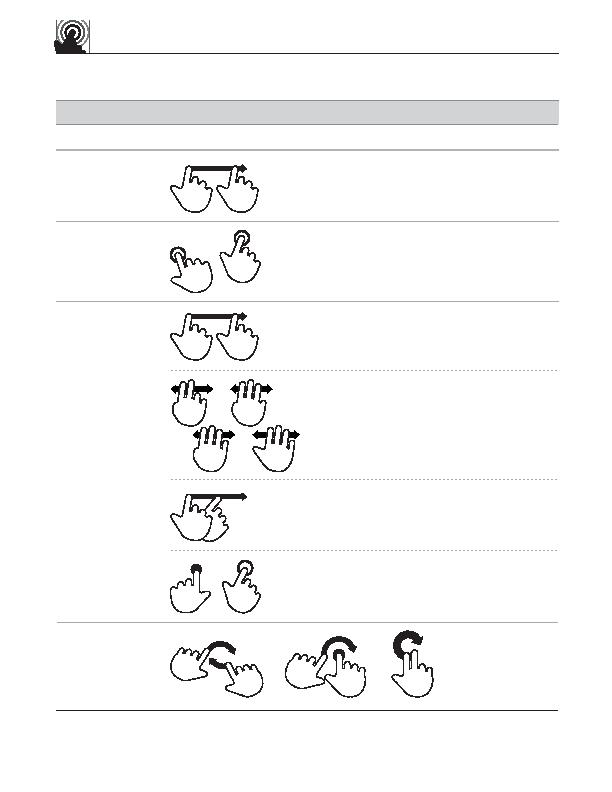

touch gesture
reference guide
drag
(across item or
off-screen)
Delete
tap
(source and
destination)
Duplicate
Move
flick
rotate
Rotate
t
Supporting materials for this guide can be found online:
http://www.lukew.com/touch/
user action
gesture
description
OBJECT-RELATED ACTIONS (continued)
Quickly brush surface with fingertip
With one finger on object, touch elsewhere
on surface with second finger
Move fingertip over surface without
losing contact
1
2
Touch object, then touch elsewhere
on surface
drag
(and drop)
Move fingertip over surface without
losing contact
multi-finger
drag
Move two to five fingertips over
surface without losing contact
OR
OR
OR
press and tap
OR
OR